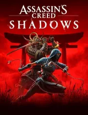
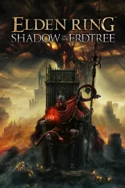
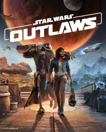
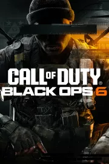
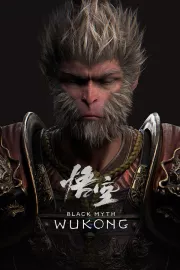
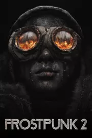
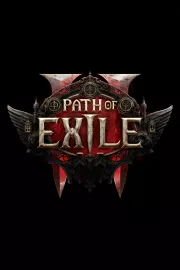
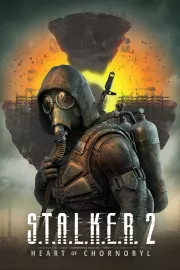
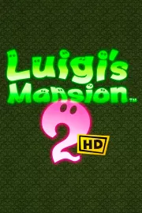

PRÓXIMOS LANZAMIENTOS EN TODO EL AÑO 2024
¿Quieres saber cuáles son los próximos lanzamientos más esperados de juegos en 2024? Aquí encontrarás el calendario con las fechas de lanzamiento.
Assassin's Creed Shadows - PC PS5 XSeries 15 de noviembre

Assassin's Creed Shadows es un videojuego de acción en mundo abierto que nos lleva a explorar el Japón Fuedal mientras vivimos las las historias entrelazadas de Naoe, una experta Assassin shinobi de la provincia de Iga, y Yasuke, el poderoso samurai africano de las leyendas históricas.
Elden Ring: Shadow of the Erdtree - PC PS4 PS5 XSeries XOne 21 de junio

Shadow of the Erdtree expande el multipremiado y desafiante RPG de acción en mundo abierto de FromSoftware con una historia totalmente nueva que se desarrolla en la Tierra Sombría, un lugar repleto de misterio, mazmorras peligrosas y nuevos enemigos, armas y equipo.
Star Wars Outlaws - PC PS5 XSeries 30 de agosto

Star Wars Outlaws es un videojuego de acción y aventura en mundo abierto que nos desafía a convertirnos en la forajida más buscada de la galaxia. Star Wars Outlaws invita a sus jugadores a disfrutar de la galaxia de Star Wars como nunca antes, en una historia original ambientada entre Star Wars: El imperio contraataca y Star Wars: El retorno del Jedi.
Call of Duty: Black Ops 6 - PC PS4 PS5 XSeries XOne en octubre

La saga de acción-shooter multijugador más exitosa del mercado regresa en 2024 con Call of Duty: Black Ops 6. Por el momento no hay muchos detalles que compartir, pero se espera que su anuncio se produzca antes del inicio del verano.
Silent Hill 2: Remake - PC PS5 8 de octubre
Bloober Team (The Medium) desarrolla Silent Hill 2: Remake, la adaptación a PC y PS5 del, para muchos, mejor videojuego de la saga de terror de Konami que promete rehacer desde cero el aclamado videojuego modernizando su gameplay y apartado audiovisual.
Black Myth: Wukong - PC PS5 XSeries 20 de agosto

Black Myth: Wu Kong es un videojuego de acción y aventura con elementos RPG inspirado por la saga Soulsborne y la gran obra de la literatura china Viaje al Oeste.
Hollow Knight: Silksong - PC PS4 PS5 XSeries XOne Switch por determinar
Es la secuela de Hollow Knight, uno de los videojuegos de acción y plataformas del estilo metroidvania más celebrados y exitosos de los últimos tiempos. Encarnando a Hornet, princesa protectora de Hallownest, deberemos sobrevivir en un nuevo mundo peligroso y desconocido.
Frostpunk 2 - PC PS5 XSeries 25 de julio

Frostpunk 2 es un videojuego de estrategia y supervivencia urbano ambientado 30 años después de una apocalíptica tormenta de nieve que asoló la Tierra y la convirtió en un páramo gélido. Una vez más, debes asumir el desafío de convertirse en líder de una metrópolis hambrienta de recursos en la que la expansión y los conflictos internos son una realidad inevitable.
Path of Exile 2 - PC PS5 XSeries Mac por determinar

Path of Exile 2 continúa la historia del popular videojuego original, llevándonos una vez más a las oscuras tierras de Wraeclast para combatir contra cientos de monstruos en la piel de varios héroes con sus propias habilidades especiales.
S.T.A.L.K.E.R. 2 - PC XSeries 5 de septiembre

S.T.A.L.K.E.R. 2: Heart of Chernobyl es un videojuego de acción-shooter y supervivencia en primera persona ambientado en una Zona de Exclusión de Chornóbil que ya dejó huella en 2009 con el celebrado S.T.A.L.K.E.R. Call of Pripyat. El escenario en el que se moverán los jugadores en esta segunda entrega es bien distinto.
Luigi's Mansion 2 HD - Switch 27 de junio

Luigi's Mansion 2 se actualiza en Nintendo Switch con una versión con gráficos mejorados que desafía a los jugadores a explorar una vez más mansiones encantadas repletas de espectros aterradores y desafíos que les pondrán los pelos de punta. Por el momento no hay más detalles sobre sus novedades.